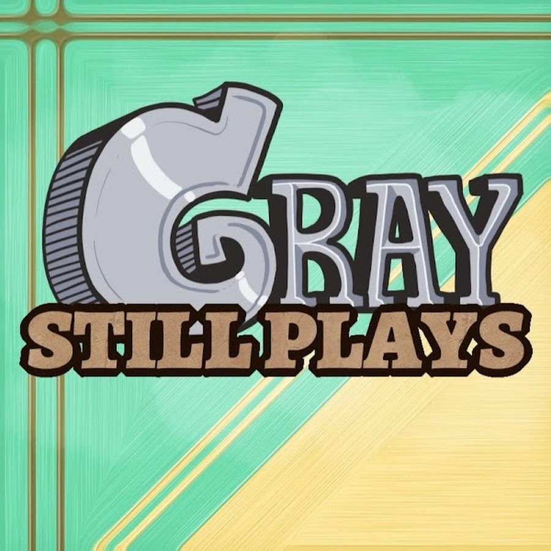
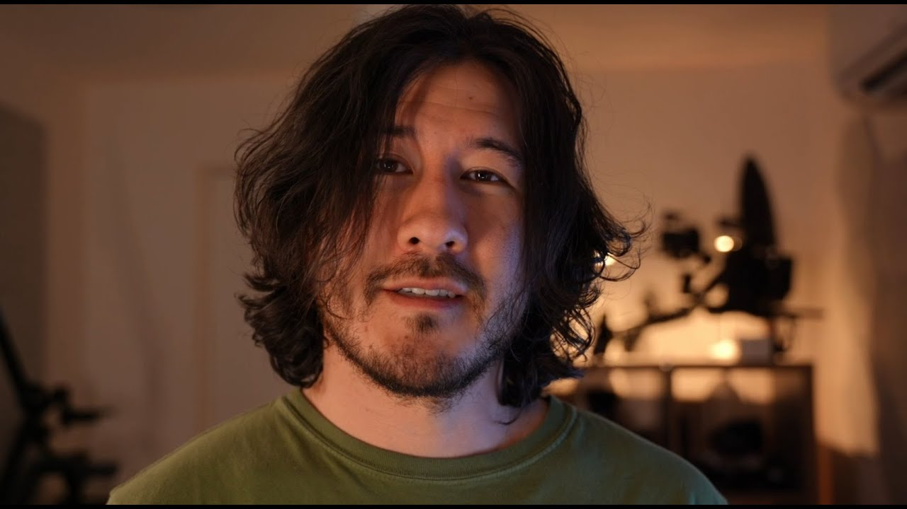
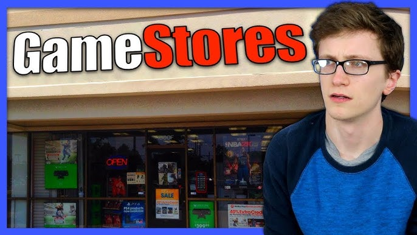
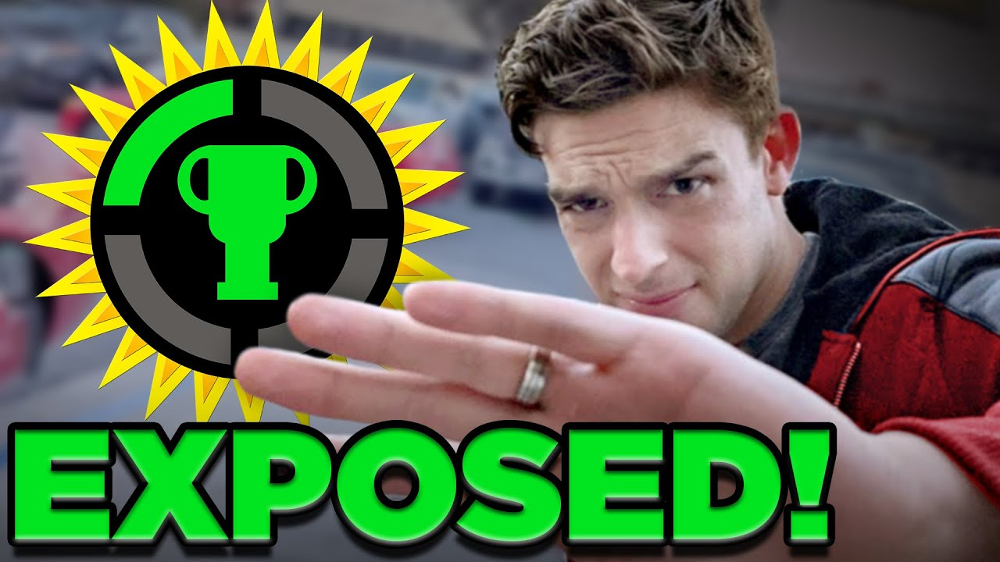
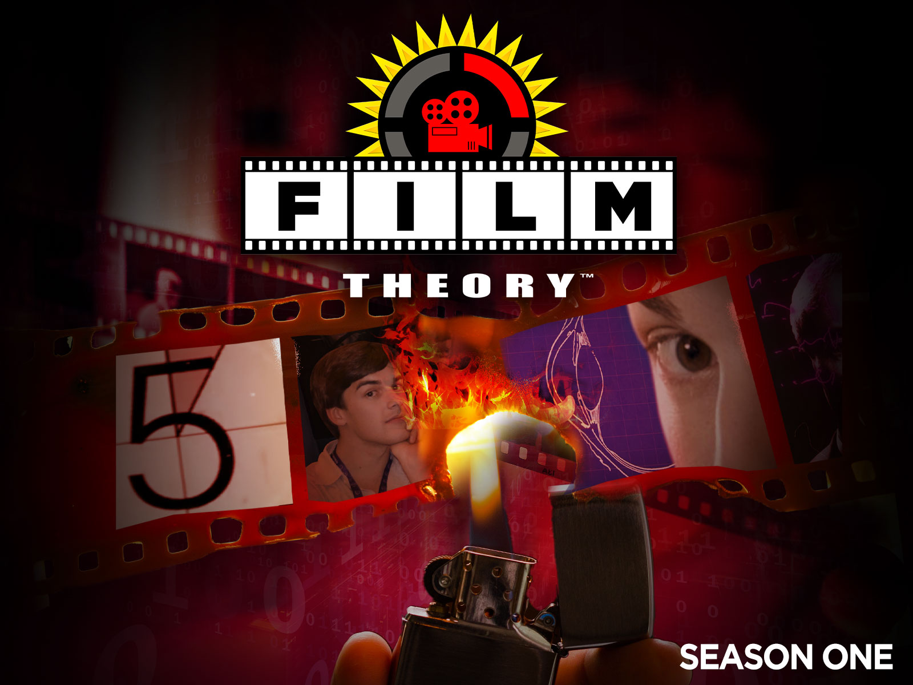
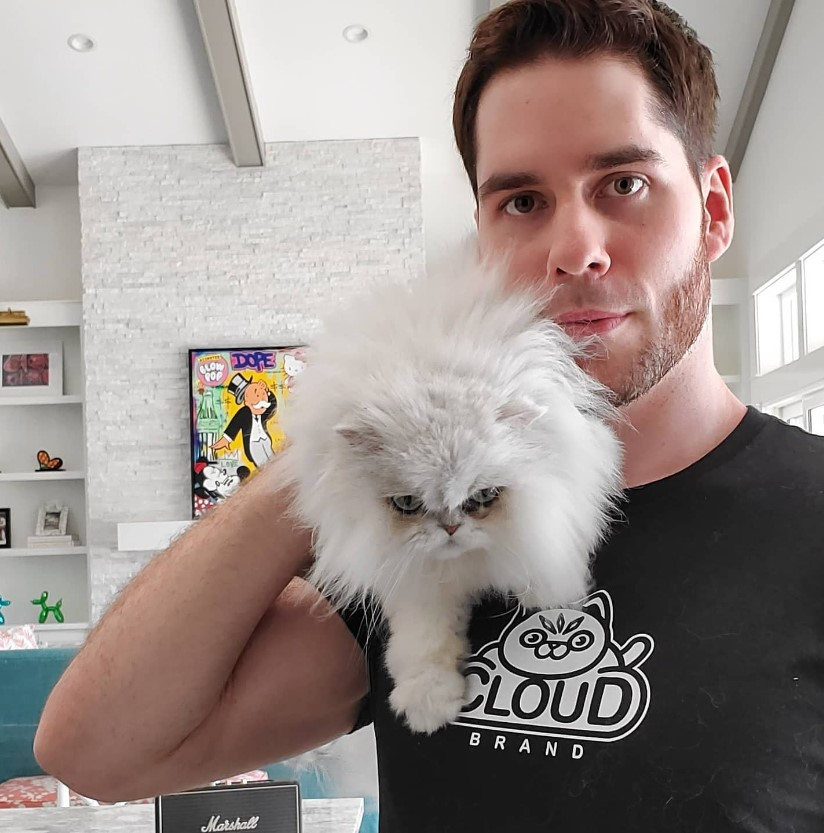

Welcome!
This site is about my personal favorite YouTubers, why I like watching them, and what they do. Here you'll hopefully find short, non-boring info about what I enjoy watching.
© 2025 Toad Wiz - Culley McDowell — All hail the frogs 🐸.
This site is about my personal favorite YouTubers, why I like watching them, and what they do. Here you'll hopefully find short, non-boring info about what I enjoy watching.
© 2025 Toad Wiz - Culley McDowell — All hail the frogs 🐸.

GraystillPlays is a YouTuber who plays wild games from Universe Sandbox to Sims and GTA 5. Always hilarious.

Markiplier — been watching him since I was a kid, still one of my top favorites.
PewDiePie — former #1 subscribed YouTuber, still one of the most influential creators.
Jacksfilms — parody, comedy, and chaos. Always funny and oddly relatable.
Moist Critical (Cr1tikal) — comedy, game reviews, and sarcasm galore.

Scott The Woz — gaming comedy & reviews that are actually informative.

The Game Theorists — deep dives into game lore. Classic MatPat brain fuel.

The Film Theorists — theories about movies & shows. Same MatPat madness, different flavor.

PopularMMOs — the Minecraft legend. Despite setbacks, still an icon.